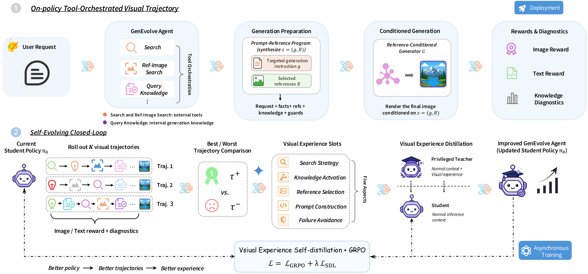
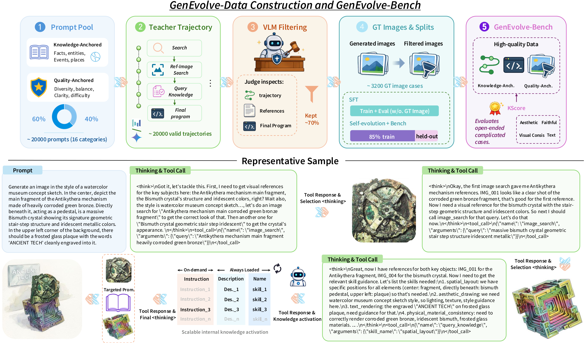
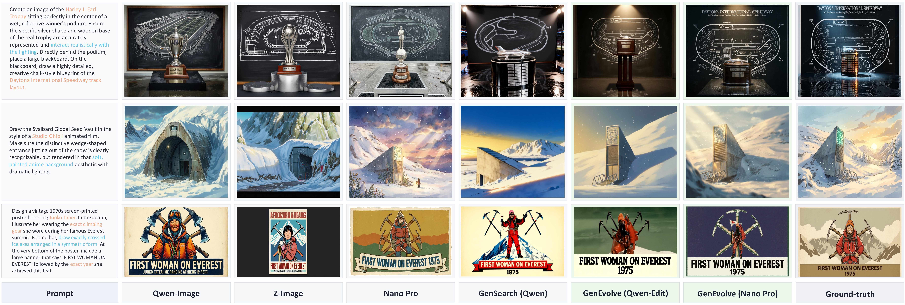

Open-ended image generation is no longer a simple prompt-to-image problem. High-quality generation often requires an agent to combine a model's internal generative ability with external resources. As requests become more diverse and demanding, we aim to develop a general image-generation agent that can self-evolve through trajectories and use tools more effectively across varied generation challenges.
To this end, we propose GenEvolve, a self-evolving framework based on Tool-Orchestrated Visual Experience Distillation. In GenEvolve, each generation attempt is modeled as a tool-orchestrated trajectory, where the agent gathers evidence, selects references, invokes generation skills, and composes them into a prompt-reference program. Unlike existing methods that rely on image-level scalar rewards, GenEvolve compares multiple trajectories and abstracts best-worst differences into structured visual experience, provided only to a privileged teacher branch. Inspired by on-policy self-distillation, Visual Experience Distillation provides dense token-level supervision for better tool orchestration.
We further construct GenEvolve-Data and GenEvolve-Bench. Experiments show substantial gains over strong baselines, achieving state-of-the-art performance among current image-generation frameworks.
Models generation as multi-turn visual trajectories with external search, visual references, and callable generation knowledge.
Converts best-worst trajectory differences into structured experience, enabling dense token-level supervision via privileged teacher distillation.
GRPO + VED form a closed loop: stronger policies → better trajectories → richer experience → future improvements.
Comprehensive trajectory dataset and diagnostic benchmark spanning Knowledge-Anchored and Quality-Anchored challenges.

Overview of GenEvolve. The student agent orchestrates search, references, and generation knowledge to produce a prompt-reference program. Multiple trajectories are judged; best-worst differences form visual experience injected into the teacher. GRPO + Visual Experience Self-Distillation closes the self-evolving loop.
The agent samples trajectories with three tool families: search(q) for textual evidence, image_search(q) for visual references, and query_knowledge(skill) for callable generation skills (text rendering, layout, anatomy, aesthetics, material, counting, etc.)
The trajectory outputs z=(g,R) — a targeted instruction with ordinal references, binding constraints from the user request, retrieved facts, selected references, and activated generation knowledge.
Best-worst trajectory pairs are summarized into five structured experience slots: search strategy, knowledge activation, reference selection, prompt construction, and failure avoidance.
The teacher receives experience-patched context; student sees only normal context. Importance-weighted reverse-KL distillation provides dense token-level guidance without changing inference.
A complete trajectory-level dataset for training and evaluating image-generation agents — from diverse prompts through tool-orchestrated teacher trajectories to filtered GT images.

Data construction pipeline. Diverse prompts → tool-orchestrated teacher trajectories → VLM audit → GT image rendering & filtering → splits for SFT cold-start, self-evolution, and held-out evaluation.
20K structured recipes spanning Knowledge-Anchored (entities, events, places) and Quality-Anchored (text, layout, counting, anatomy, material, aesthetics) generation challenges.
Each prompt is solved through a real multi-turn tool loop by strong teacher models (Seed2.0, Gemini 3 Pro), recording search queries, selected references, activated skills, and final programs.
Programmatic checks + VLM judge remove incomplete tool loops, invalid reference selections, and underspecified programs. Only high-quality trajectories survive.
Teacher programs are rendered into GT images by Nano Banana Pro, filtered for quality, then split into SFT (trajectories), self-evolution (image feedback), and GenEvolve-Bench (held-out eval).
Each entry contains a user request, full tool trajectory, selected references, and GT image.
See how GenEvolve orchestrates tools step-by-step: from user request through search, reference selection, skill activation, to the final generated image.
| Method | Generator | Judge Dimensions | Benchmark Overall | |||||
|---|---|---|---|---|---|---|---|---|
| Faith. | Vis. | Text | Aesth. | KScore | Know. | Qual. | ||
| Direct Generator Baselines | ||||||||
| Lumina-Image 2.0 | Lumina-Image 2.0 | 0.1044 | 0.0000 | 0.3308 | 0.2694 | 0.1697 | 0.1528 | 0.1915 |
| BAGEL | BAGEL | 0.1212 | 0.0059 | 0.3721 | 0.4082 | 0.2041 | 0.1684 | 0.2504 |
| SD-3.5-Large | SD-3.5 | 0.1456 | 0.0135 | 0.3872 | 0.4865 | 0.2235 | 0.1943 | 0.2612 |
| FLUX.1-dev | FLUX.1 | 0.1574 | 0.0059 | 0.4150 | 0.5556 | 0.2396 | 0.2097 | 0.2784 |
| FLUX.2 Klein 4B | FLUX.2 | 0.2525 | 0.0059 | 0.3847 | 0.5648 | 0.2380 | 0.2004 | 0.2865 |
| Z-Image-Turbo | Z-Image | 0.2837 | 0.0396 | 0.4369 | 0.6187 | 0.2808 | 0.2340 | 0.3413 |
| FLUX.2 Klein 9B | FLUX.2 | 0.3662 | 0.0210 | 0.4192 | 0.6599 | 0.2787 | 0.2327 | 0.3382 |
| Z-Image | Z-Image | 0.3333 | 0.0278 | 0.4352 | 0.5429 | 0.2728 | 0.2203 | 0.3407 |
| Qwen-Image | Qwen-Image | 0.3729 | 0.0623 | 0.4226 | 0.6751 | 0.2987 | 0.2384 | 0.3768 |
| Nano Banana Pro | Nano Banana Pro | 0.7761 | 0.2837 | 0.6178 | 0.9158 | 0.5298 | 0.5160 | 0.5477 |
| Agentic Image-Generation Workflows | ||||||||
| Gen-Searcher 8B | Qwen-Image-Edit-2511 | 0.5284 | 0.1050 | 0.4768 | 0.6377 | 0.3493 | 0.3293 | 0.3745 |
| Gen-Searcher 8B | Nano Banana Pro | 0.7465 | 0.3378 | 0.6198 | 0.9036 | 0.5481 | 0.5472 | 0.5492 |
| GenEvolve (Ours) | Qwen-Image-Edit-2511 | 0.5303 | 0.1338 | 0.4907 | 0.6347 | 0.3663 | 0.3410 | 0.3990 |
| GenEvolve (Ours) | Nano Banana Pro | 0.7970 | 0.3832 | 0.6218 | 0.9222 | 0.5739 | 0.5669 | 0.5830 |
| Model | Cultural | Time | Space | Biology | Physics | Chemistry | Overall |
|---|---|---|---|---|---|---|---|
| Direct Generator Baselines | |||||||
| Emu3 | 0.34 | 0.45 | 0.48 | 0.41 | 0.45 | 0.27 | 0.39 |
| FLUX.1-schnell | 0.39 | 0.44 | 0.50 | 0.31 | 0.44 | 0.26 | 0.40 |
| SD-3-Medium | 0.42 | 0.44 | 0.48 | 0.39 | 0.47 | 0.29 | 0.42 |
| SD-3.5-Medium | 0.43 | 0.50 | 0.52 | 0.41 | 0.53 | 0.33 | 0.45 |
| SD-3.5-Large | 0.44 | 0.50 | 0.58 | 0.44 | 0.52 | 0.31 | 0.46 |
| FLUX.1-dev | 0.48 | 0.58 | 0.62 | 0.42 | 0.51 | 0.35 | 0.50 |
| Hunyuan-Image 3.0 | 0.58 | 0.57 | 0.70 | 0.56 | 0.63 | 0.31 | 0.57 |
| UniWorld-V2 | 0.60 | 0.61 | 0.70 | 0.53 | 0.64 | 0.32 | 0.58 |
| Qwen-Image | 0.62 | 0.63 | 0.77 | 0.57 | 0.75 | 0.40 | 0.62 |
| NextFlow-RL | 0.63 | 0.63 | 0.77 | 0.58 | 0.67 | 0.39 | 0.62 |
| LongCat-Image | 0.66 | 0.61 | 0.72 | 0.66 | 0.72 | 0.49 | 0.65 |
| DeepGen1.0 | 0.72 | 0.81 | 0.70 | 0.67 | 0.82 | 0.66 | 0.73 |
| GPT-4o | 0.81 | 0.71 | 0.89 | 0.83 | 0.79 | 0.74 | 0.80 |
| Agentic Image-Generation Workflows | |||||||
| GenAgent | 0.78 | 0.67 | 0.78 | 0.72 | 0.77 | 0.55 | 0.72 |
| Gen-Searcher-8B + Qwen-Image | 0.80 | 0.71 | 0.82 | 0.76 | 0.74 | 0.75 | 0.77 |
| Mind-Brush | 0.83 | 0.69 | 0.84 | 0.71 | 0.85 | 0.68 | 0.78 |
| GenEvolve + Qwen-Image-Edit (Ours) | 0.84 | 0.74 | 0.87 | 0.83 | 0.81 | 0.83 | 0.82 |

Visual comparison on GenEvolve-Bench. Orange = external knowledge requirements. Blue = internal generation-knowledge requirements.
Click any card to view references, generated program, and full details.
@article{chen2026genevolve,
title = {GenEvolve: Self-Evolving Image Generation Agents via
Tool-Orchestrated Visual Experience Distillation},
author = {Chen, Sixiang and Xing, Zhaohu and Ye, Tian and Geng, Xinyu
and Lin, Yunlong and Lai, Jianyu and He, Xuanhua and Zhai, Fuxiang
and Gao, Jialin and Zhu, Lei},
journal = {arXiv preprint arXiv:XXXX.XXXXX},
year = {2026}
}